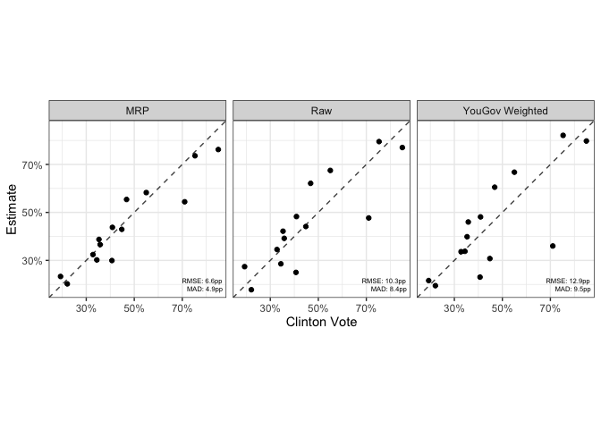

This is a set of functions to facilitate running MRP models on CCES data and is a companion to ccesMRPprep.
To install,
remotes::install_github("kuriwaki/ccesMRPrun")The main functions in this package are:
-
fit_brms()for fitting a multilevel model (orfit_brms_binomial) -
poststrat_draws()for extracting posterior draws for each area -
summ_sims()for obtaining summary statistics from these draws -
scatter_45()for clearly visualizing the relationship between the truth and estimate
Steps 1-3 can be done via mrp_onestep().
See below for a demonstration with an example in the state of Georgia.
Fitting
This is a simple wrapper around brms::brm but with some custom priors and a binomial model as a default.
The two key parts of the workflow is a formula and a data. The formula should be a brms formula with a binary variable in the outcome. The data should be individual level data and have all the variables mentioned in the formula.
form <- response ~ (1|age) + (1 + female |educ) + clinton_vote + (1|cd)
cc_voters <- filter(cces_GA, vv_turnout_gvm == "Voted")Now fit the model. fit_brms is basically the brm function, but with some wrappers.
fit <- fit_brms(form, cc_voters, verbose = FALSE)## Running /Library/Frameworks/R.framework/Resources/bin/R CMD SHLIB foo.c
## clang -mmacosx-version-min=10.13 -I"/Library/Frameworks/R.framework/Resources/include" -DNDEBUG -I"/Library/Frameworks/R.framework/Versions/4.0/Resources/library/Rcpp/include/" -I"/Library/Frameworks/R.framework/Versions/4.0/Resources/library/RcppEigen/include/" -I"/Library/Frameworks/R.framework/Versions/4.0/Resources/library/RcppEigen/include/unsupported" -I"/Library/Frameworks/R.framework/Versions/4.0/Resources/library/BH/include" -I"/Library/Frameworks/R.framework/Versions/4.0/Resources/library/StanHeaders/include/src/" -I"/Library/Frameworks/R.framework/Versions/4.0/Resources/library/StanHeaders/include/" -I"/Library/Frameworks/R.framework/Versions/4.0/Resources/library/RcppParallel/include/" -I"/Library/Frameworks/R.framework/Versions/4.0/Resources/library/rstan/include" -DEIGEN_NO_DEBUG -DBOOST_DISABLE_ASSERTS -DBOOST_PENDING_INTEGER_LOG2_HPP -DSTAN_THREADS -DBOOST_NO_AUTO_PTR -include '/Library/Frameworks/R.framework/Versions/4.0/Resources/library/StanHeaders/include/stan/math/prim/mat/fun/Eigen.hpp' -D_REENTRANT -DRCPP_PARALLEL_USE_TBB=1 -I/usr/local/include -fPIC -Wall -g -O2 -c foo.c -o foo.o
## In file included from <built-in>:1:
## In file included from /Library/Frameworks/R.framework/Versions/4.0/Resources/library/StanHeaders/include/stan/math/prim/mat/fun/Eigen.hpp:13:
## In file included from /Library/Frameworks/R.framework/Versions/4.0/Resources/library/RcppEigen/include/Eigen/Dense:1:
## In file included from /Library/Frameworks/R.framework/Versions/4.0/Resources/library/RcppEigen/include/Eigen/Core:88:
## /Library/Frameworks/R.framework/Versions/4.0/Resources/library/RcppEigen/include/Eigen/src/Core/util/Macros.h:628:1: error: unknown type name 'namespace'
## namespace Eigen {
## ^
## /Library/Frameworks/R.framework/Versions/4.0/Resources/library/RcppEigen/include/Eigen/src/Core/util/Macros.h:628:16: error: expected ';' after top level declarator
## namespace Eigen {
## ^
## ;
## In file included from <built-in>:1:
## In file included from /Library/Frameworks/R.framework/Versions/4.0/Resources/library/StanHeaders/include/stan/math/prim/mat/fun/Eigen.hpp:13:
## In file included from /Library/Frameworks/R.framework/Versions/4.0/Resources/library/RcppEigen/include/Eigen/Dense:1:
## /Library/Frameworks/R.framework/Versions/4.0/Resources/library/RcppEigen/include/Eigen/Core:96:10: fatal error: 'complex' file not found
## #include <complex>
## ^~~~~~~~~
## 3 errors generated.
## make: *** [foo.o] Error 1
class(fit)Poststratification
We can take predicted values from each of the MCMC draws, and aggregate it up to the area of interest.
Here we use the poststratification data to fit on. We use the acs_GA built-in data here, but refer to ccesMRPprep to make a data that is your own.
drw <- poststrat_draws(fit, poststrat_tgt = acs_GA)
drwSummaries
We often care about the posterior mean and 95 percent credible intervals of the draws.
mrp_val <- summ_sims(drw)Append the truth and a baseline raw-sample
dir_val <- direct_ests(form, cc_voters,
area_var = "cd",
weight_var = "weight_post")
mrp_val <- summ_sims(drw) %>%
left_join(elec_GA, by = "cd") %>%
left_join(dir_val, by = "cd")Visualization
A wrapper for visualizing the accuracy relationship
scatter_45(mrp_val, clinton_vote, p_mrp_est,
lblvar = cd,
ubvar = p_mrp_900,
lbvar = p_mrp_050,
xlab = "Clinton Vote",
ylab = "MRP Estimate ")
Compare this with raw estimates:

It may be easier to store the models in long form and show them at once.
# reshape to long
mrp_long <- mrp_val %>%
select(cd, p_mrp_est, p_raw, p_wt, clinton_vote) %>%
pivot_longer(-c(cd, clinton_vote), names_to = "model")
# plot
scatter_45(mrp_long,
clinton_vote,
value,
by_form = ~model,
by_labels = c(p_mrp_est = "MRP", p_raw = "Raw", p_wt = "YouGov Weighted"),
xlab = "Clinton Vote",
ylab = "Estimate")